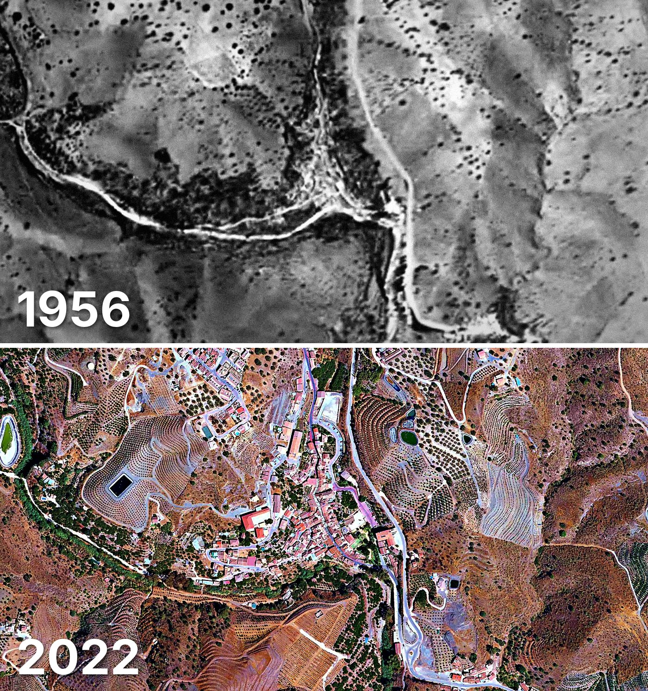

Viñuela
Viñuela tiene 1.449 edificios y 1.487 viviendas, y 2.044 habitantes en 2025. La mitad de sus edificios es de 2001 o posterior.
Cuándo se construyeron sus edificios
Desde 2015 se han terminado 31 edificios.

Las calles de Viñuela con más viviendas
- Calle Pizarras · 47 viviendas
- Calle Granada · 42 viviendas
- Calle Virgen de la Milagrosa · 42 viviendas
- Lugar Loma de San José · 36 viviendas
- Barriada La Aldea · 35 viviendas
- Barriada Ramírez Ermita · 35 viviendas
- Lugar Casa Blanca · 25 viviendas
- Barriada las Casillas · 23 viviendas
- Lugar Mangamasa · 23 viviendas
- Lugar La Rotura · 22 viviendas
Toda la información de Viñuela en CASAS.ES →
Fotos de Viñuela para publicar
Estas fotos aéreas de Viñuela, de 1956 y de 2022, se pueden publicar gratis en un periódico, un blog, la web del ayuntamiento o las redes, citando la fuente como se indica debajo.

Descargar: las dos juntas · 1956 · 2022 (JPG, 1.400 px de ancho)


Texto listo para publicar
Viñuela desde el aire: así era en 1956 y así es en 2022
Las dos fotos muestran el mismo encuadre de Viñuela con 66 años de diferencia: arriba, el Vuelo Americano de 1956; abajo, la foto aérea del PNOA de septiembre de 2022. Hoy Viñuela tiene 1.449 edificios y 1.487 viviendas, y 2.044 habitantes en 2025. La mitad de sus edificios es de 2001 o posterior. El 55 % de sus edificios se ha levantado desde el año 2000.
Más datos de Viñuela en CASAS.ES: casas.es/malaga/vinuela
Cita para copiar
Fotos: Vuelo Americano Serie B (1956-57) y PNOA 2022, cedidos por © Instituto Geográfico Nacional (CC BY 4.0, scne.es). Datos y composición: <a href="https://casas.es/malaga/vinuela/">los datos de Viñuela en CASAS.ES</a>Descarga: municipios (CSV) · calles (CSV) · Wikidata (Q1647744) · cómo usarlos en Python (dev.to) · también en OSF, Figshare, B2SHARE y Mendeley Data